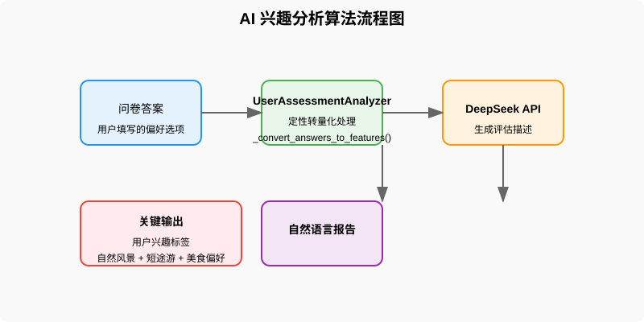

AI 兴趣分析算法

该算法通过问卷收集用户旅游偏好，经过UserAssessmentAnalyzer类进行定性到量化的转换，
调用DeepSeek API生成自然语言报告，并输出关键的用户兴趣标签。
个性化推荐引擎

推荐引擎使用匹配公式：匹配度 =（用户兴趣标签权重 × 景点属性权重）+ 实时热度因子，
根据用户标签与景点属性的匹配程度，为用户提供个性化的旅游推荐。
分布式爬虫技术

爬虫系统采用多线程技术爬取数据，经过清洗、标准化存储，并实现每日一次的定期更新，
确保景点开放时间、活动信息等数据的实时准确性。